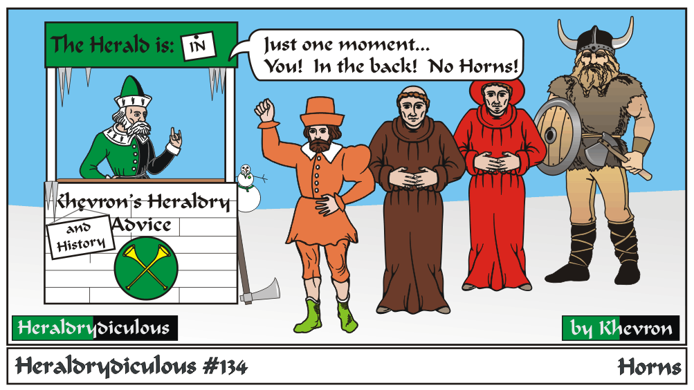

The horned helmet wasn't used in, well, any period. It first came into being in a production of a
Wagnerian opera (probably "der Ring") in the early 20th century, and was associated with the Norse Gods and warriors ever since.
Who says designers don't have influence? ...though true effort in historical accuracy isn't always appreciated.
Horned (and winged) helmets/caps appear (affontee) in SCA arms, but they aren't a charge used in period heraldry. Best to stick with a drinking horn.
I'm not sure where I learned this, but there's more info at:
The Viking Answer Lady Website
e-mail: 
Back to Khevron's Heraldry Page